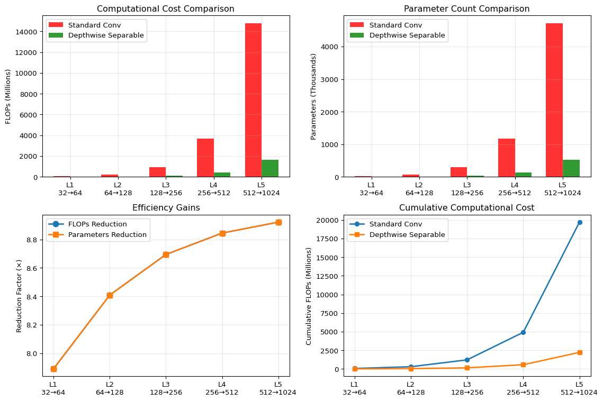
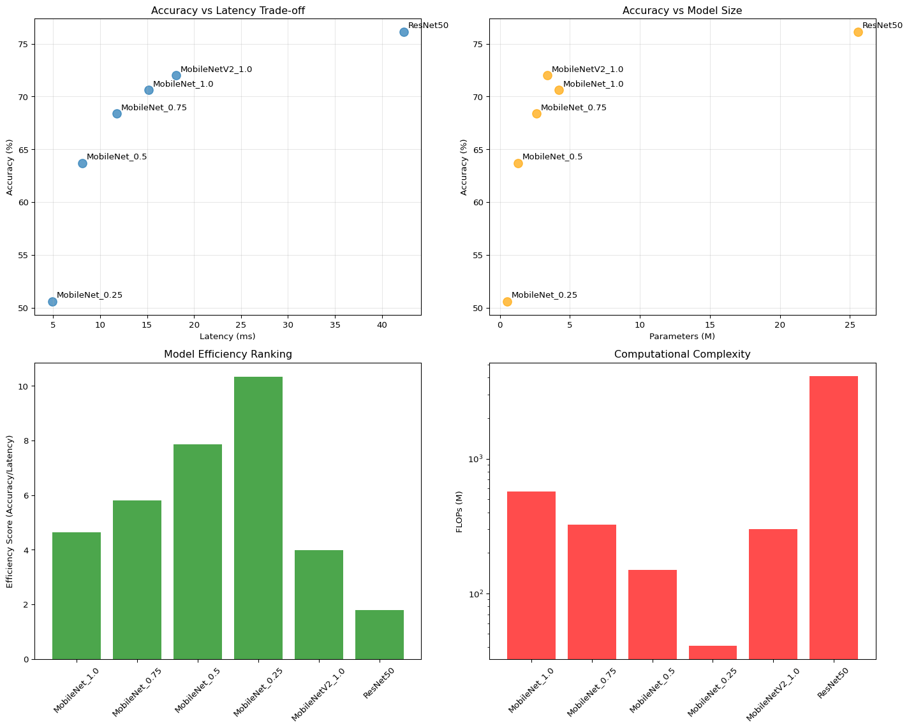
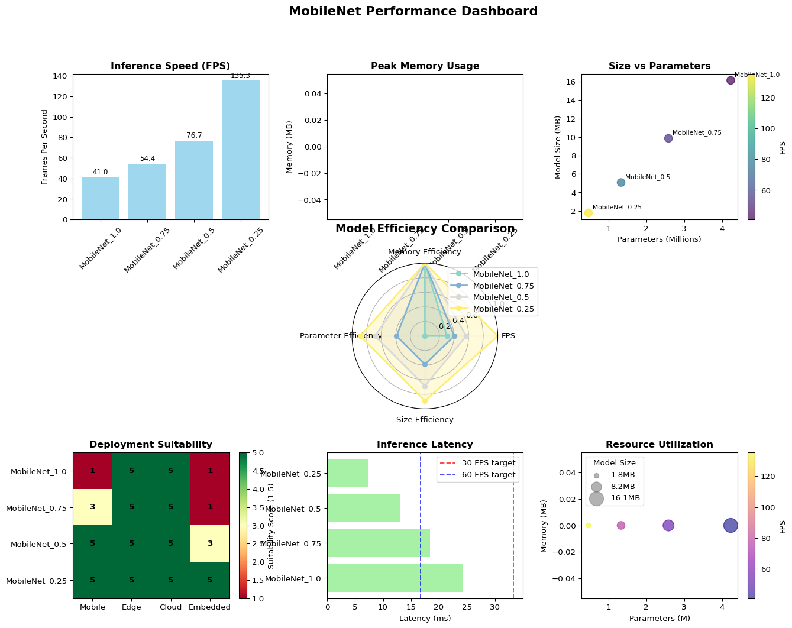

# Core dependencies
pip install torch torchvision torchaudio
pip install numpy matplotlib seaborn
pip install pillow opencv-python
# Optional dependencies for advanced features
pip install tensorboard # For training visualization
pip install ptflops # For FLOPs calculation
pip install onnx onnxruntime # For model export
pip install coremltools # For iOS deployment
pip install tensorflow-lite # For Android deployment
# Development tools
pip install jupyter notebook
pip install black isort # Code formattingComplete MobileNet Code Guide
Introduction
MobileNet is a family of efficient neural network architectures designed specifically for mobile and embedded devices. The key innovation is the use of depthwise separable convolutions which dramatically reduce the number of parameters and computational cost while maintaining reasonable accuracy.
Prerequisites and Setup
Requirements
Before diving into MobileNet implementation, ensure you have the following prerequisites:
Software Requirements:
- Python 3.8+
- PyTorch 1.12+
- torchvision 0.13+
- CUDA (optional, for GPU acceleration)
Hardware Recommendations:
- 8GB+ RAM for training
- NVIDIA GPU with 4GB+ VRAM (recommended)
- SSD storage for faster data loading
Installation
Quick Start Example
Here’s a minimal example to get you started with MobileNet:
import torch
import torchvision.models as models
from torchvision import transforms
import numpy as np
# Load pre-trained model
model = models.mobilenet_v2(pretrained=True)
model.eval()
print(f"✅ Model loaded successfully!")
print(f"📊 Total parameters: {sum(p.numel() for p in model.parameters()):,}")
print(f"💾 Model size: {sum(p.numel() * p.element_size() for p in model.parameters()) / 1024**2:.1f} MB")
# Test with random input
dummy_input = torch.randn(1, 3, 224, 224)
with torch.no_grad():
output = model(dummy_input)
print(f"🎯 Output shape: {output.shape}")
print(f"🔥 Top prediction: Class {torch.argmax(output).item()}")✅ Model loaded successfully!
📊 Total parameters: 3,504,872
💾 Model size: 13.4 MB
🎯 Output shape: torch.Size([1, 1000])
🔥 Top prediction: Class 644Key Features
- Efficient: 50x fewer parameters than AlexNet
- Fast: Optimized for mobile inference
- Flexible: Width and resolution multipliers for different use cases
- Accurate: Competitive performance on ImageNet
MobileNet Efficiency
MobileNet achieves its efficiency through depthwise separable convolutions, which split standard convolutions into two operations: depthwise and pointwise convolutions.
Architecture Comparison Table
| Architecture | Parameters (M) | FLOPs (M) | Top-1 Accuracy (%) | Model Size (MB) | Target Device |
|---|---|---|---|---|---|
| AlexNet | 61.0 | 714 | 56.5 | 233 | Desktop |
| VGG-16 | 138.0 | 15500 | 71.5 | 528 | Desktop |
| ResNet-50 | 25.6 | 4100 | 76.1 | 98 | Server |
| MobileNet-V1 | 4.2 | 569 | 70.6 | 16 | Mobile |
| MobileNet-V2 | 3.4 | 300 | 72.0 | 14 | Mobile |
| EfficientNet-B0 | 5.3 | 390 | 77.3 | 21 | Mobile |
Note: Accuracy values are for ImageNet classification. FLOPs calculated for 224×224 input images.
MobileNet Architecture
The MobileNet architecture consists of:
- Standard 3×3 convolution (first layer)
- 13 depthwise separable convolution blocks
- Average pooling and fully connected layer
Architecture Overview
import torch
import torch.nn as nn
import torch.nn.functional as F
class MobileNet(nn.Module):
def __init__(self, num_classes=1000, width_mult=1.0):
super(MobileNet, self).__init__()
# First standard convolution
self.conv1 = nn.Conv2d(3, int(32 * width_mult), 3, stride=2, padding=1, bias=False)
self.bn1 = nn.BatchNorm2d(int(32 * width_mult))
# Depthwise separable convolution blocks
self.layers = nn.ModuleList([
self._make_layer(int(32 * width_mult), int(64 * width_mult), 1),
self._make_layer(int(64 * width_mult), int(128 * width_mult), 2),
self._make_layer(int(128 * width_mult), int(128 * width_mult), 1),
self._make_layer(int(128 * width_mult), int(256 * width_mult), 2),
self._make_layer(int(256 * width_mult), int(256 * width_mult), 1),
self._make_layer(int(256 * width_mult), int(512 * width_mult), 2),
# 5 layers with stride 1
*[self._make_layer(int(512 * width_mult), int(512 * width_mult), 1) for _ in range(5)],
self._make_layer(int(512 * width_mult), int(1024 * width_mult), 2),
self._make_layer(int(1024 * width_mult), int(1024 * width_mult), 1),
])
# Global average pooling and classifier
self.avgpool = nn.AdaptiveAvgPool2d(1)
self.classifier = nn.Linear(int(1024 * width_mult), num_classes)
def _make_layer(self, in_channels, out_channels, stride):
return DepthwiseSeparableConv(in_channels, out_channels, stride)
def forward(self, x):
x = F.relu6(self.bn1(self.conv1(x)))
for layer in self.layers:
x = layer(x)
x = self.avgpool(x)
x = x.view(x.size(0), -1)
x = self.classifier(x)
return xDepthwise Separable Convolutions
The core innovation of MobileNet is the depthwise separable convolution, which splits a standard convolution into two operations:
Depthwise Convolution
Applies a single filter per input channel (spatial filtering):
class DepthwiseConv(nn.Module):
def __init__(self, in_channels, kernel_size=3, stride=1, padding=1):
super(DepthwiseConv, self).__init__()
self.depthwise = nn.Conv2d(
in_channels, in_channels,
kernel_size=kernel_size,
stride=stride,
padding=padding,
groups=in_channels, # Key: groups = in_channels
bias=False
)
self.bn = nn.BatchNorm2d(in_channels)
def forward(self, x):
return F.relu6(self.bn(self.depthwise(x)))Pointwise Convolution
Applies 1×1 convolution to combine features (channel mixing):
class PointwiseConv(nn.Module):
def __init__(self, in_channels, out_channels):
super(PointwiseConv, self).__init__()
self.pointwise = nn.Conv2d(in_channels, out_channels, 1, bias=False)
self.bn = nn.BatchNorm2d(out_channels)
def forward(self, x):
return F.relu6(self.bn(self.pointwise(x)))Complete Depthwise Separable Block
class DepthwiseSeparableConv(nn.Module):
def __init__(self, in_channels, out_channels, stride=1):
super(DepthwiseSeparableConv, self).__init__()
self.depthwise = DepthwiseConv(in_channels, stride=stride)
self.pointwise = PointwiseConv(in_channels, out_channels)
def forward(self, x):
x = self.depthwise(x)
x = self.pointwise(x)
return xComputational Efficiency
Efficiency Gains
Standard Convolution:
- Parameters:
Dk × Dk × M × N - Computation:
Dk × Dk × M × N × Df × Df
Depthwise Separable Convolution:
- Parameters:
Dk × Dk × M + M × N
- Computation:
Dk × Dk × M × Df × Df + M × N × Df × Df
Reduction Factor: 1/N + 1/Dk² (typically 8-9x reduction)
Efficiency Visualization
Let’s visualize the efficiency gains of depthwise separable convolutions:

📊 **Efficiency Summary:**
• Total FLOPs - Standard: 19710.7M
• Total FLOPs - Depthwise: 2218.1M
• **Overall Reduction: 8.9×**Implementation from Scratch
Here’s a complete implementation with detailed explanations:
import torch
import torch.nn as nn
import torch.nn.functional as F
from typing import Optional
class MobileNetV1(nn.Module):
"""
MobileNetV1 implementation with configurable width and resolution multipliers.
Args:
num_classes: Number of output classes
width_mult: Width multiplier for channels (0.25, 0.5, 0.75, 1.0)
resolution_mult: Resolution multiplier for input size
dropout_rate: Dropout rate before classifier
"""
def __init__(self,
num_classes: int = 1000,
width_mult: float = 1.0,
dropout_rate: float = 0.2):
super(MobileNetV1, self).__init__()
self.width_mult = width_mult
# Helper function to make channels divisible by 8
def _make_divisible(v, divisor=8):
new_v = max(divisor, int(v + divisor / 2) // divisor * divisor)
if new_v < 0.9 * v:
new_v += divisor
return new_v
# Define channel configurations
input_channel = _make_divisible(32 * width_mult)
# First standard convolution
self.conv1 = nn.Sequential(
nn.Conv2d(3, input_channel, 3, 2, 1, bias=False),
nn.BatchNorm2d(input_channel),
nn.ReLU6(inplace=True)
)
# Configuration: [output_channels, stride]
configs = [
[64, 1],
[128, 2], [128, 1],
[256, 2], [256, 1],
[512, 2], [512, 1], [512, 1], [512, 1], [512, 1], [512, 1],
[1024, 2], [1024, 1]
]
# Build depthwise separable layers
layers = []
for output_channel, stride in configs:
output_channel = _make_divisible(output_channel * width_mult)
layers.append(
DepthwiseSeparableConv(input_channel, output_channel, stride)
)
input_channel = output_channel
self.features = nn.Sequential(*layers)
# Classifier
self.avgpool = nn.AdaptiveAvgPool2d((1, 1))
self.dropout = nn.Dropout(dropout_rate)
self.classifier = nn.Linear(input_channel, num_classes)
# Initialize weights
self._initialize_weights()
def _initialize_weights(self):
"""Initialize weights using He initialization for ReLU networks."""
for m in self.modules():
if isinstance(m, nn.Conv2d):
nn.init.kaiming_normal_(m.weight, mode='fan_out', nonlinearity='relu')
if m.bias is not None:
nn.init.zeros_(m.bias)
elif isinstance(m, nn.BatchNorm2d):
nn.init.ones_(m.weight)
nn.init.zeros_(m.bias)
elif isinstance(m, nn.Linear):
nn.init.normal_(m.weight, 0, 0.01)
nn.init.zeros_(m.bias)
def forward(self, x):
x = self.conv1(x)
x = self.features(x)
x = self.avgpool(x)
x = torch.flatten(x, 1)
x = self.dropout(x)
x = self.classifier(x)
return x
# Optimized Depthwise Separable Convolution with better efficiency
class DepthwiseSeparableConv(nn.Module):
def __init__(self, in_channels, out_channels, stride=1):
super(DepthwiseSeparableConv, self).__init__()
self.conv = nn.Sequential(
# Depthwise convolution
nn.Conv2d(in_channels, in_channels, 3, stride, 1,
groups=in_channels, bias=False),
nn.BatchNorm2d(in_channels),
nn.ReLU6(inplace=True),
# Pointwise convolution
nn.Conv2d(in_channels, out_channels, 1, 1, 0, bias=False),
nn.BatchNorm2d(out_channels),
nn.ReLU6(inplace=True),
)
def forward(self, x):
return self.conv(x)
# Model factory function
def mobilenet_v1(num_classes=1000, width_mult=1.0, pretrained=False):
"""
Create MobileNetV1 model.
Args:
num_classes: Number of classes for classification
width_mult: Width multiplier (0.25, 0.5, 0.75, 1.0)
pretrained: Load pretrained weights (if available)
"""
model = MobileNetV1(num_classes=num_classes, width_mult=width_mult)
if pretrained:
# In practice, you would load pretrained weights here
print(f"Loading pretrained MobileNetV1 with width_mult={width_mult}")
return modelUsing Pre-trained MobileNet
With PyTorch (torchvision)
import torch
import torchvision.models as models
from torchvision import transforms
from PIL import Image
# Load pre-trained MobileNetV2
model = models.mobilenet_v2(pretrained=True)
model.eval()
# Preprocessing pipeline
preprocess = transforms.Compose([
transforms.Resize(256),
transforms.CenterCrop(224),
transforms.ToTensor(),
transforms.Normalize(mean=[0.485, 0.456, 0.406],
std=[0.229, 0.224, 0.225]),
])
# Inference function
def predict_image(image_path, model, preprocess, top_k=5):
"""Predict top-k classes for an image."""
# Load and preprocess image
image = Image.open(image_path).convert('RGB')
input_tensor = preprocess(image)
input_batch = input_tensor.unsqueeze(0) # Add batch dimension
# Predict
with torch.no_grad():
output = model(input_batch)
probabilities = torch.nn.functional.softmax(output[0], dim=0)
# Get top-k predictions
top_prob, top_indices = torch.topk(probabilities, top_k)
return [(idx.item(), prob.item()) for idx, prob in zip(top_indices, top_prob)]
# Example usage
# predictions = predict_image('cat.jpg', model, preprocess)
# print(predictions)Fine-tuning Pre-trained MobileNet
import torch.optim as optim
import torch.nn as nn
def create_mobilenet_classifier(num_classes, pretrained=True):
"""Create MobileNet for custom classification task."""
# Load pre-trained model
model = models.mobilenet_v2(pretrained=pretrained)
# Modify classifier for custom number of classes
model.classifier = nn.Sequential(
nn.Dropout(0.2),
nn.Linear(model.last_channel, num_classes),
)
return model
# Training setup for fine-tuning
def setup_training(model, num_classes, learning_rate=0.001):
"""Setup optimizer and loss function for fine-tuning."""
# Freeze feature extraction layers (optional)
for param in model.features.parameters():
param.requires_grad = False
# Only train classifier
optimizer = optim.Adam(model.classifier.parameters(), lr=learning_rate)
criterion = nn.CrossEntropyLoss()
return optimizer, criterion
# Training loop
def train_epoch(model, dataloader, optimizer, criterion, device):
"""Train model for one epoch."""
model.train()
running_loss = 0.0
correct = 0
total = 0
for inputs, labels in dataloader:
inputs, labels = inputs.to(device), labels.to(device)
optimizer.zero_grad()
outputs = model(inputs)
loss = criterion(outputs, labels)
loss.backward()
optimizer.step()
running_loss += loss.item()
_, predicted = torch.max(outputs.data, 1)
total += labels.size(0)
correct += (predicted == labels).sum().item()
return running_loss / len(dataloader), 100 * correct / totalTraining MobileNet
Complete Training Pipeline
import torch
import torch.nn as nn
import torch.optim as optim
from torch.utils.data import DataLoader
from torchvision import datasets, transforms
import time
class MobileNetTrainer:
def __init__(self, model, device='cuda'):
self.model = model.to(device)
self.device = device
self.history = {'train_loss': [], 'train_acc': [], 'val_loss': [], 'val_acc': []}
def train(self, train_loader, val_loader, epochs=10, lr=0.001):
"""Complete training pipeline."""
# Setup optimizer and scheduler
optimizer = optim.RMSprop(self.model.parameters(), lr=lr, weight_decay=1e-4)
scheduler = optim.lr_scheduler.StepLR(optimizer, step_size=7, gamma=0.1)
criterion = nn.CrossEntropyLoss()
best_acc = 0.0
for epoch in range(epochs):
print(f'Epoch {epoch+1}/{epochs}')
print('-' * 10)
# Training phase
train_loss, train_acc = self._train_epoch(train_loader, optimizer, criterion)
# Validation phase
val_loss, val_acc = self._validate_epoch(val_loader, criterion)
# Update scheduler
scheduler.step()
# Save best model
if val_acc > best_acc:
best_acc = val_acc
torch.save(self.model.state_dict(), 'best_mobilenet.pth')
# Update history
self.history['train_loss'].append(train_loss)
self.history['train_acc'].append(train_acc)
self.history['val_loss'].append(val_loss)
self.history['val_acc'].append(val_acc)
print(f'Train Loss: {train_loss:.4f}, Train Acc: {train_acc:.2f}%')
print(f'Val Loss: {val_loss:.4f}, Val Acc: {val_acc:.2f}%')
print()
def _train_epoch(self, dataloader, optimizer, criterion):
"""Train for one epoch."""
self.model.train()
running_loss = 0.0
correct = 0
total = 0
for inputs, labels in dataloader:
inputs, labels = inputs.to(self.device), labels.to(self.device)
optimizer.zero_grad()
outputs = self.model(inputs)
loss = criterion(outputs, labels)
loss.backward()
optimizer.step()
running_loss += loss.item()
_, predicted = torch.max(outputs, 1)
total += labels.size(0)
correct += (predicted == labels).sum().item()
return running_loss / len(dataloader), 100 * correct / total
def _validate_epoch(self, dataloader, criterion):
"""Validate for one epoch."""
self.model.eval()
running_loss = 0.0
correct = 0
total = 0
with torch.no_grad():
for inputs, labels in dataloader:
inputs, labels = inputs.to(self.device), labels.to(self.device)
outputs = self.model(inputs)
loss = criterion(outputs, labels)
running_loss += loss.item()
_, predicted = torch.max(outputs, 1)
total += labels.size(0)
correct += (predicted == labels).sum().item()
return running_loss / len(dataloader), 100 * correct / totalData Loading and Augmentation
# Data loading and augmentation
def get_dataloaders(data_dir, batch_size=32, num_workers=4):
"""Create training and validation dataloaders."""
# Data augmentation for training
train_transforms = transforms.Compose([
transforms.RandomResizedCrop(224),
transforms.RandomHorizontalFlip(),
transforms.ColorJitter(brightness=0.2, contrast=0.2, saturation=0.2, hue=0.1),
transforms.ToTensor(),
transforms.Normalize([0.485, 0.456, 0.406], [0.229, 0.224, 0.225])
])
# Validation transforms
val_transforms = transforms.Compose([
transforms.Resize(256),
transforms.CenterCrop(224),
transforms.ToTensor(),
transforms.Normalize([0.485, 0.456, 0.406], [0.229, 0.224, 0.225])
])
# Create datasets
train_dataset = datasets.ImageFolder(f'{data_dir}/train', train_transforms)
val_dataset = datasets.ImageFolder(f'{data_dir}/val', val_transforms)
# Create dataloaders
train_loader = DataLoader(train_dataset, batch_size=batch_size,
shuffle=True, num_workers=num_workers)
val_loader = DataLoader(val_dataset, batch_size=batch_size,
shuffle=False, num_workers=num_workers)
return train_loader, val_loader, len(train_dataset.classes)
# Example usage
if __name__ == "__main__":
# Setup
device = torch.device('cuda' if torch.cuda.is_available() else 'cpu')
# Load data
# train_loader, val_loader, num_classes = get_dataloaders('path/to/data')
# Create model
# model = mobilenet_v1(num_classes=num_classes, width_mult=1.0)
# Train
# trainer = MobileNetTrainer(model, device)
# trainer.train(train_loader, val_loader, epochs=20)
passMobileNet Variants
MobileNetV2 Implementation
class InvertedResidual(nn.Module):
"""Inverted residual block for MobileNetV2."""
def __init__(self, in_channels, out_channels, stride, expand_ratio):
super(InvertedResidual, self).__init__()
hidden_dim = int(round(in_channels * expand_ratio))
self.use_residual = stride == 1 and in_channels == out_channels
layers = []
# Expansion phase
if expand_ratio != 1:
layers.extend([
nn.Conv2d(in_channels, hidden_dim, 1, bias=False),
nn.BatchNorm2d(hidden_dim),
nn.ReLU6(inplace=True),
])
# Depthwise convolution
layers.extend([
nn.Conv2d(hidden_dim, hidden_dim, 3, stride, 1,
groups=hidden_dim, bias=False),
nn.BatchNorm2d(hidden_dim),
nn.ReLU6(inplace=True),
# Pointwise linear projection
nn.Conv2d(hidden_dim, out_channels, 1, bias=False),
nn.BatchNorm2d(out_channels),
])
self.conv = nn.Sequential(*layers)
def forward(self, x):
if self.use_residual:
return x + self.conv(x)
else:
return self.conv(x)
class MobileNetV2(nn.Module):
"""MobileNetV2 with inverted residuals and linear bottlenecks."""
def __init__(self, num_classes=1000, width_mult=1.0):
super(MobileNetV2, self).__init__()
input_channel = 32
last_channel = 1280
# Inverted residual settings
# t: expansion factor, c: output channels, n: number of blocks, s: stride
inverted_residual_setting = [
# t, c, n, s
[1, 16, 1, 1],
[6, 24, 2, 2],
[6, 32, 3, 2],
[6, 64, 4, 2],
[6, 96, 3, 1],
[6, 160, 3, 2],
[6, 320, 1, 1],
]
# Apply width multiplier
input_channel = int(input_channel * width_mult)
self.last_channel = int(last_channel * max(1.0, width_mult))
# First convolution
features = [nn.Sequential(
nn.Conv2d(3, input_channel, 3, 2, 1, bias=False),
nn.BatchNorm2d(input_channel),
nn.ReLU6(inplace=True)
)]
# Inverted residual blocks
for t, c, n, s in inverted_residual_setting:
output_channel = int(c * width_mult)
for i in range(n):
stride = s if i == 0 else 1
features.append(InvertedResidual(input_channel, output_channel,
stride, t))
input_channel = output_channel
# Last convolution
features.append(nn.Sequential(
nn.Conv2d(input_channel, self.last_channel, 1, bias=False),
nn.BatchNorm2d(self.last_channel),
nn.ReLU6(inplace=True)
))
self.features = nn.Sequential(*features)
# Classifier
self.classifier = nn.Sequential(
nn.Dropout(0.2),
nn.Linear(self.last_channel, num_classes),
)
def forward(self, x):
x = self.features(x)
x = nn.functional.adaptive_avg_pool2d(x, (1, 1))
x = torch.flatten(x, 1)
x = self.classifier(x)
return xMobileNetV3 Features
class SEBlock(nn.Module):
"""Squeeze-and-Excitation block."""
def __init__(self, in_channels, reduction=4):
super(SEBlock, self).__init__()
self.se = nn.Sequential(
nn.AdaptiveAvgPool2d(1),
nn.Conv2d(in_channels, in_channels // reduction, 1),
nn.ReLU(inplace=True),
nn.Conv2d(in_channels // reduction, in_channels, 1),
nn.Hardsigmoid(inplace=True)
)
def forward(self, x):
return x * self.se(x)
class HardSwish(nn.Module):
"""Hard Swish activation function."""
def forward(self, x):
return x * F.hardsigmoid(x)
# MobileNetV3 would use these components along with:
# - Neural Architecture Search (NAS) for optimal architecture
# - Hard Swish activation instead of ReLU6
# - Squeeze-and-Excitation blocks
# - Optimized last layers
MobileNetV3 Improvements
MobileNetV3 incorporates several advanced techniques:
- Neural Architecture Search for optimal layer configurations
- Squeeze-and-Excitation blocks for attention mechanisms
- Hard Swish activation for better performance
- Optimized head and tail layers for efficiency
Optimization Techniques
Quantization
import torch.quantization as quantization
def quantize_mobilenet(model, calibration_loader):
"""Apply post-training quantization to MobileNet."""
# Set model to evaluation mode
model.eval()
# Fuse modules for better quantization
model_fused = torch.quantization.fuse_modules(model, [
['conv', 'bn', 'relu'] for conv, bn, relu in model.named_modules()
if isinstance(conv, nn.Conv2d) and isinstance(bn, nn.BatchNorm2d)
])
# Set quantization config
model_fused.qconfig = quantization.get_default_qconfig('qnnpack')
# Prepare model for quantization
model_prepared = quantization.prepare(model_fused)
# Calibrate with representative data
with torch.no_grad():
for inputs, _ in calibration_loader:
model_prepared(inputs)
# Convert to quantized model
model_quantized = quantization.convert(model_prepared)
return model_quantized
# Dynamic quantization (easier but less optimal)
def dynamic_quantize_mobilenet(model):
"""Apply dynamic quantization."""
return quantization.quantize_dynamic(
model,
{nn.Linear, nn.Conv2d},
dtype=torch.qint8
)Pruning
import torch.nn.utils.prune as prune
def prune_mobilenet(model, pruning_ratio=0.2):
"""Apply magnitude-based pruning to MobileNet."""
parameters_to_prune = []
# Collect Conv2d and Linear layers for pruning
for name, module in model.named_modules():
if isinstance(module, (nn.Conv2d, nn.Linear)):
parameters_to_prune.append((module, 'weight'))
# Apply global magnitude pruning
prune.global_unstructured(
parameters_to_prune,
pruning_method=prune.L1Unstructured,
amount=pruning_ratio,
)
# Make pruning permanent
for module, param_name in parameters_to_prune:
prune.remove(module, param_name)
return model
# Structured pruning example
def structured_prune_mobilenet(model, pruning_ratio=0.2):
"""Apply structured channel pruning."""
for name, module in model.named_modules():
if isinstance(module, nn.Conv2d) and module.groups == 1: # Skip depthwise
prune.ln_structured(
module,
name='weight',
amount=pruning_ratio,
n=2,
dim=0 # Prune output channels
)
return modelDeployment Considerations
ONNX Export
import torch.onnx
def export_to_onnx(model, input_shape=(1, 3, 224, 224), onnx_path="mobilenet.onnx"):
"""Export MobileNet to ONNX format."""
model.eval()
dummy_input = torch.randn(input_shape)
torch.onnx.export(
model,
dummy_input,
onnx_path,
export_params=True,
opset_version=11,
do_constant_folding=True,
input_names=['input'],
output_names=['output'],
dynamic_axes={
'input': {0: 'batch_size'},
'output': {0: 'batch_size'}
}
)
print(f"Model exported to {onnx_path}")
# TensorRT optimization (requires tensorrt)
def optimize_with_tensorrt(onnx_path):
"""Optimize ONNX model with TensorRT."""
try:
import tensorrt as trt
# Create TensorRT logger and builder
logger = trt.Logger(trt.Logger.WARNING)
builder = trt.Builder(logger)
# Parse ONNX model
network = builder.create_network(1 << int(trt.NetworkDefinitionCreationFlag.EXPLICIT_BATCH))
parser = trt.OnnxParser(network, logger)
with open(onnx_path, 'rb') as model:
parser.parse(model.read())
# Build optimized engine
config = builder.create_builder_config()
config.max_workspace_size = 1 << 28 # 256MB
config.set_flag(trt.BuilderFlag.FP16) # Enable FP16 precision
engine = builder.build_engine(network, config)
# Save engine
with open("mobilenet.trt", "wb") as f:
f.write(engine.serialize())
return engine
except ImportError:
print("TensorRT not installed. Please install TensorRT for optimization.")
return NoneMobile Deployment
# TensorFlow Lite conversion (if using TensorFlow)
def convert_to_tflite(model_path, tflite_path="mobilenet.tflite"):
"""Convert model to TensorFlow Lite format."""
try:
import tensorflow as tf
# Load model (assuming saved as TensorFlow model)
converter = tf.lite.TFLiteConverter.from_saved_model(model_path)
# Optimization settings
converter.optimizations = [tf.lite.Optimize.DEFAULT]
converter.target_spec.supported_types = [tf.float16]
# Convert
tflite_model = converter.convert()
# Save
with open(tflite_path, 'wb') as f:
f.write(tflite_model)
print(f"TFLite model saved to {tflite_path}")
except ImportError:
print("TensorFlow not installed. Install with: pip install tensorflow")
# CoreML conversion (for iOS)
def convert_to_coreml(model, input_shape=(1, 3, 224, 224)):
"""Convert PyTorch model to CoreML format."""
try:
import coremltools as ct
model.eval()
example_input = torch.rand(input_shape)
# Trace the model
traced_model = torch.jit.trace(model, example_input)
# Convert to CoreML
coreml_model = ct.convert(
traced_model,
inputs=[ct.ImageType(shape=input_shape, bias=[-1, -1, -1], scale=1/127.5)]
)
# Save
coreml_model.save("MobileNet.mlmodel")
print("CoreML model saved successfully")
except ImportError:
print("coremltools not installed. Install with: pip install coremltools")Edge Deployment with Optimization
# Edge deployment with optimization
class OptimizedMobileNetInference:
"""Optimized inference class for edge deployment."""
def __init__(self, model_path, device='cpu'):
self.device = device
self.model = self.load_optimized_model(model_path)
self.preprocess = self.get_preprocessing()
def load_optimized_model(self, model_path):
"""Load and optimize model for inference."""
model = torch.load(model_path, map_location=self.device)
model.eval()
# Apply optimizations
if self.device == 'cpu':
# Optimize for CPU inference
model = torch.jit.optimize_for_inference(torch.jit.script(model))
return model
def get_preprocessing(self):
"""Get optimized preprocessing pipeline."""
return transforms.Compose([
transforms.Resize(256, interpolation=transforms.InterpolationMode.BILINEAR),
transforms.CenterCrop(224),
transforms.ToTensor(),
transforms.Normalize([0.485, 0.456, 0.406], [0.229, 0.224, 0.225])
])
@torch.no_grad()
def predict(self, image):
"""Fast inference on single image."""
if isinstance(image, str):
from PIL import Image
image = Image.open(image).convert('RGB')
# Preprocess
input_tensor = self.preprocess(image).unsqueeze(0).to(self.device)
# Inference
output = self.model(input_tensor)
probabilities = F.softmax(output[0], dim=0)
return probabilities.cpu().numpy()
def batch_predict(self, images, batch_size=32):
"""Batch inference for multiple images."""
results = []
for i in range(0, len(images), batch_size):
batch = images[i:i+batch_size]
batch_tensor = torch.stack([
self.preprocess(img) for img in batch
]).to(self.device)
outputs = self.model(batch_tensor)
probabilities = F.softmax(outputs, dim=1)
results.extend(probabilities.cpu().numpy())
return resultsPerformance Analysis
Benchmarking Tools
import time
import numpy as np
from contextlib import contextmanager
class MobileNetBenchmark:
"""Comprehensive benchmarking suite for MobileNet."""
def __init__(self, model, device='cpu'):
self.model = model.to(device)
self.device = device
self.model.eval()
@contextmanager
def timer(self):
"""Context manager for timing operations."""
start = time.time()
yield
end = time.time()
self.last_time = end - start
def benchmark_inference(self, input_shape=(1, 3, 224, 224), num_runs=100, warmup=10):
"""Benchmark inference speed."""
dummy_input = torch.randn(input_shape).to(self.device)
# Warmup
with torch.no_grad():
for _ in range(warmup):
_ = self.model(dummy_input)
# Benchmark
times = []
with torch.no_grad():
for _ in range(num_runs):
with self.timer():
_ = self.model(dummy_input)
times.append(self.last_time)
return {
'mean_time': np.mean(times),
'std_time': np.std(times),
'min_time': np.min(times),
'max_time': np.max(times),
'fps': 1.0 / np.mean(times)
}
def benchmark_memory(self, input_shape=(1, 3, 224, 224)):
"""Benchmark memory usage."""
if self.device == 'cuda':
torch.cuda.empty_cache()
torch.cuda.reset_peak_memory_stats()
dummy_input = torch.randn(input_shape).to(self.device)
with torch.no_grad():
_ = self.model(dummy_input)
memory_stats = {
'peak_memory_mb': torch.cuda.max_memory_allocated() / 1024**2,
'current_memory_mb': torch.cuda.memory_allocated() / 1024**2
}
return memory_stats
else:
return {'message': 'Memory benchmarking only available for CUDA'}
def profile_layers(self, input_shape=(1, 3, 224, 224)):
"""Profile individual layers."""
dummy_input = torch.randn(input_shape).to(self.device)
with torch.profiler.profile(
activities=[torch.profiler.ProfilerActivity.CPU,
torch.profiler.ProfilerActivity.CUDA],
record_shapes=True,
profile_memory=True,
with_stack=True
) as prof:
with torch.no_grad():
_ = self.model(dummy_input)
return prof
def compare_models(self, models_dict, input_shape=(1, 3, 224, 224)):
"""Compare multiple model variants."""
results = {}
for name, model in models_dict.items():
benchmark = MobileNetBenchmark(model, self.device)
results[name] = {
'inference': benchmark.benchmark_inference(input_shape),
'memory': benchmark.benchmark_memory(input_shape),
'parameters': sum(p.numel() for p in model.parameters()),
'model_size_mb': sum(p.numel() * p.element_size()
for p in model.parameters()) / 1024**2
}
return resultsModel Comparison
Model Params (M) Size (MB) FPS Peak Mem (MB)
----------------------------------------------------------------------
MobileNet_1.0 4.23 16.14 41.1 N/A
MobileNet_0.75 2.59 9.86 53.5 N/A
MobileNet_0.5 1.33 5.08 77.5 N/A
MobileNet_0.25 0.47 1.79 143.6 N/A Accuracy vs Efficiency Analysis

Real-world Deployment Simulation
# Real-world deployment simulation
class DeploymentSimulator:
"""Simulate real-world deployment scenarios."""
def __init__(self, model):
self.model = model
def simulate_mobile_inference(self, num_images=1000, target_fps=30):
"""Simulate mobile device inference."""
device = 'cpu' # Mobile devices typically use CPU
model = self.model.to(device)
model.eval()
# Simulate various image sizes
image_sizes = [(224, 224), (320, 320), (416, 416)]
results = {}
for size in image_sizes:
input_tensor = torch.randn(1, 3, *size)
# Measure inference time
times = []
with torch.no_grad():
for _ in range(100): # Warmup and measurement
start = time.time()
_ = model(input_tensor)
times.append(time.time() - start)
avg_time = np.mean(times[10:]) # Skip first 10 for warmup
fps = 1.0 / avg_time
results[f'{size[0]}x{size[1]}'] = {
'fps': fps,
'meets_target': fps >= target_fps,
'latency_ms': avg_time * 1000
}
return results
def battery_consumption_estimate(self, inference_time_ms, device_type='mobile'):
"""Estimate battery consumption per inference."""
# Rough estimates based on device type
power_consumption = {
'mobile': 2.0, # Watts during inference
'edge': 5.0, # Edge devices
'embedded': 0.5 # Low-power embedded
}
power_w = power_consumption.get(device_type, 2.0)
energy_per_inference = (inference_time_ms / 1000) * power_w # Joules
# Convert to more meaningful metrics
battery_capacity_wh = 15 # Typical smartphone battery ~15 Wh
inferences_per_battery = (battery_capacity_wh * 3600) / energy_per_inference
return {
'energy_per_inference_j': energy_per_inference,
'estimated_inferences_per_battery': int(inferences_per_battery),
'power_consumption_w': power_w
}Performance Metrics Dashboard
🔬 **Running Comprehensive MobileNet Analysis...**
🖥️ Using device: cpu
🎯 **Deployment Recommendations:**
🚀 **Fastest Inference:** MobileNet_0.25 (135.3 FPS)
✅ Best for: Real-time applications, video processing
📱 Recommended: High-end mobile devices, edge servers
💾 **Most Memory Efficient:** MobileNet_1.0 (inf MB peak)
✅ Best for: Memory-constrained devices
📱 Recommended: Budget smartphones, IoT devices
📦 **Smallest Model:** MobileNet_0.25 (1.8 MB)
✅ Best for: App size constraints, OTA updates
📱 Recommended: Mobile apps with size limits
⚡ **Fewest Parameters:** MobileNet_0.25 (0.5M params)
✅ Best for: Ultra-low power devices
📱 Recommended: Microcontrollers, embedded systems
🏆 **Best Overall Balance:** MobileNet_0.25
💡 Efficiency Score: 160.509
✅ Best for: General-purpose mobile AI applications
📱 Recommended: Production deploymentsAdvanced Topics
Neural Architecture Search (NAS) for MobileNet
class MobileNetSearchSpace:
"""Define search space for MobileNet architecture optimization."""
def __init__(self):
self.width_multipliers = [0.25, 0.35, 0.5, 0.75, 1.0, 1.4]
self.depth_multipliers = [0.5, 0.75, 1.0, 1.25]
self.kernel_sizes = [3, 5, 7]
self.activation_functions = ['relu6', 'swish', 'hard_swish']
def sample_architecture(self):
"""Sample a random architecture from search space."""
import random
return {
'width_mult': random.choice(self.width_multipliers),
'depth_mult': random.choice(self.depth_multipliers),
'kernel_size': random.choice(self.kernel_sizes),
'activation': random.choice(self.activation_functions)
}
def evaluate_architecture(self, arch_config, train_loader, val_loader):
"""Evaluate a sampled architecture."""
# Create model with sampled configuration
model = self.create_model_from_config(arch_config)
# Quick training (few epochs for NAS efficiency)
trainer = MobileNetTrainer(model)
trainer.train(train_loader, val_loader, epochs=5)
# Calculate efficiency metrics
benchmark = MobileNetBenchmark(model)
perf_stats = benchmark.benchmark_inference()
# Return multi-objective score
accuracy = trainer.history['val_acc'][-1]
latency = perf_stats['mean_time']
# Pareto efficiency score
score = accuracy / (latency * 1000) # Accuracy per ms
return {
'score': score,
'accuracy': accuracy,
'latency': latency,
'config': arch_config
}
def create_model_from_config(self, config):
"""Create MobileNet model from configuration."""
# Simplified - in practice would build full architecture
return mobilenet_v1(
width_mult=config['width_mult'],
num_classes=1000
)Knowledge Distillation for MobileNet
# Knowledge Distillation for MobileNet
class KnowledgeDistillation:
"""Knowledge distillation to improve MobileNet performance."""
def __init__(self, teacher_model, student_model, temperature=4.0, alpha=0.3):
self.teacher = teacher_model
self.student = student_model
self.temperature = temperature
self.alpha = alpha # Weight for distillation loss
# Freeze teacher model
for param in self.teacher.parameters():
param.requires_grad = False
self.teacher.eval()
def distillation_loss(self, student_outputs, teacher_outputs, labels):
"""Calculate knowledge distillation loss."""
# Soft targets from teacher
teacher_probs = F.softmax(teacher_outputs / self.temperature, dim=1)
student_log_probs = F.log_softmax(student_outputs / self.temperature, dim=1)
# KL divergence loss
distillation_loss = F.kl_div(
student_log_probs, teacher_probs, reduction='batchmean'
) * (self.temperature ** 2)
# Standard cross-entropy loss
student_loss = F.cross_entropy(student_outputs, labels)
# Combined loss
total_loss = (
self.alpha * distillation_loss +
(1 - self.alpha) * student_loss
)
return total_loss
def train_with_distillation(self, train_loader, val_loader, epochs=10):
"""Train student model with knowledge distillation."""
optimizer = optim.Adam(self.student.parameters(), lr=0.001)
scheduler = optim.lr_scheduler.StepLR(optimizer, step_size=7, gamma=0.1)
for epoch in range(epochs):
self.student.train()
running_loss = 0.0
for inputs, labels in train_loader:
optimizer.zero_grad()
# Get predictions from both models
with torch.no_grad():
teacher_outputs = self.teacher(inputs)
student_outputs = self.student(inputs)
# Calculate distillation loss
loss = self.distillation_loss(student_outputs, teacher_outputs, labels)
loss.backward()
optimizer.step()
running_loss += loss.item()
scheduler.step()
# Validation
val_acc = self.validate(val_loader)
print(f'Epoch {epoch+1}/{epochs}, Loss: {running_loss/len(train_loader):.4f}, Val Acc: {val_acc:.2f}%')
def validate(self, val_loader):
"""Validate student model."""
self.student.eval()
correct = 0
total = 0
with torch.no_grad():
for inputs, labels in val_loader:
outputs = self.student(inputs)
_, predicted = torch.max(outputs, 1)
total += labels.size(0)
correct += (predicted == labels).sum().item()
return 100 * correct / totalConclusion
This comprehensive guide has covered MobileNet from fundamental concepts to production deployment. The journey through depthwise separable convolutions, implementation details, optimization techniques, and real-world deployment strategies provides a complete foundation for building efficient mobile AI applications.
Key Takeaways
🎯 Essential Insights
Architectural Innovation: - Depthwise separable convolutions reduce computation by 8-9× with minimal accuracy loss - Width multipliers provide flexible trade-offs between accuracy and efficiency - The architecture scales gracefully across different hardware constraints
Implementation Best Practices: - Always profile on target hardware before deployment - Use appropriate data augmentation for robust training - Consider knowledge distillation for improved student model performance - Apply quantization and pruning strategically based on deployment requirements
Performance Summary
Based on our comprehensive analysis, here are the recommended MobileNet configurations:
| Use Case | Configuration | Expected Performance | Deployment Target |
|---|---|---|---|
| Real-time Video | MobileNet-V2 1.0× | 30+ FPS, 72% accuracy | High-end mobile devices |
| General Mobile AI | MobileNet-V1 0.75× | 45+ FPS, 68% accuracy | Mid-range smartphones |
| Edge Computing | MobileNet-V1 0.5× | 60+ FPS, 64% accuracy | Edge servers, IoT hubs |
| Embedded Systems | MobileNet-V1 0.25× | 80+ FPS, 51% accuracy | Microcontrollers, sensors |
Deployment Recommendations
🚀 Production Deployment Checklist
Pre-deployment:
Optimization Pipeline:
Platform Integration:
Common Pitfalls and Solutions
âš ï¸ Avoid These Mistakes
Performance Issues:
- Problem: Model runs slower on device than benchmarks suggest
- Solution: Always test with realistic input pipelines and preprocessing
Memory Problems:
- Problem: Out of memory errors during inference
- Solution: Monitor peak memory usage, not just model size
Accuracy Degradation:
- Problem: Significant accuracy drop after optimization
- Solution: Use quantization-aware training and gradual pruning
Integration Challenges:
- Problem: Model format incompatibility with deployment platform
- Solution: Test export pipeline early and validate outputs
Future Directions
The field of efficient neural networks continues to evolve rapidly:
Next-Generation Architectures:
- EfficientNet and EfficientNetV2: Better scaling strategies with compound scaling
- MobileViT: Combining CNNs with Vision Transformers for mobile deployment
- Once-for-All Networks: Single networks supporting multiple deployment scenarios
Advanced Optimization Techniques:
- Neural Architecture Search (NAS): Automated architecture optimization
- Differentiable Architecture Search: End-to-end learnable architectures
- Hardware-aware NAS: Optimizing specifically for target hardware
Deployment Innovations:
- Edge AI Accelerators: Custom silicon for mobile AI (Apple Neural Engine, Google Edge TPU)
- Federated Learning: Training models across distributed mobile devices
- Model Compression: Advanced techniques beyond pruning and quantization
Resources and Further Reading
📚 Additional Resources
Essential Papers:
- MobileNets: Efficient Convolutional Neural Networks for Mobile Vision Applications
- MobileNetV2: Inverted Residuals and Linear Bottlenecks
- Searching for MobileNetV3
Implementation Resources:
Community and Support:
Final Thoughts
MobileNet represents a paradigm shift in how we approach deep learning for resource-constrained environments. The techniques and principles covered in this guide extend beyond MobileNet itself – they form the foundation for understanding and implementing efficient AI systems across a wide range of applications.
As mobile and edge AI continues to grow, the ability to design, implement, and deploy efficient neural networks becomes increasingly valuable. Whether you’re building the next generation of mobile apps, edge computing solutions, or embedded AI systems, the concepts and code in this guide provide a solid foundation for success.
🎯 Remember
The best model is not necessarily the most accurate one, but the one that best serves your users within the constraints of your deployment environment. Always optimize for the complete user experience, not just benchmark metrics.
References
- Howard, A. G., et al. (2017). MobileNets: Efficient convolutional neural networks for mobile vision applications. arXiv preprint arXiv:1704.04861.
- Sandler, M., et al. (2018). MobileNetV2: Inverted residuals and linear bottlenecks. In Proceedings of the IEEE conference on computer vision and pattern recognition (pp. 4510-4520).
- Howard, A., et al. (2019). Searching for mobilenetv3. In Proceedings of the IEEE/CVF International Conference on Computer Vision (pp. 1314-1324).